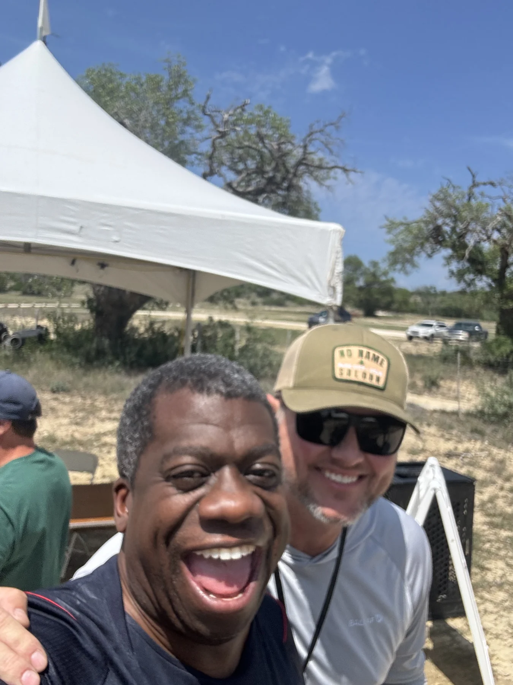
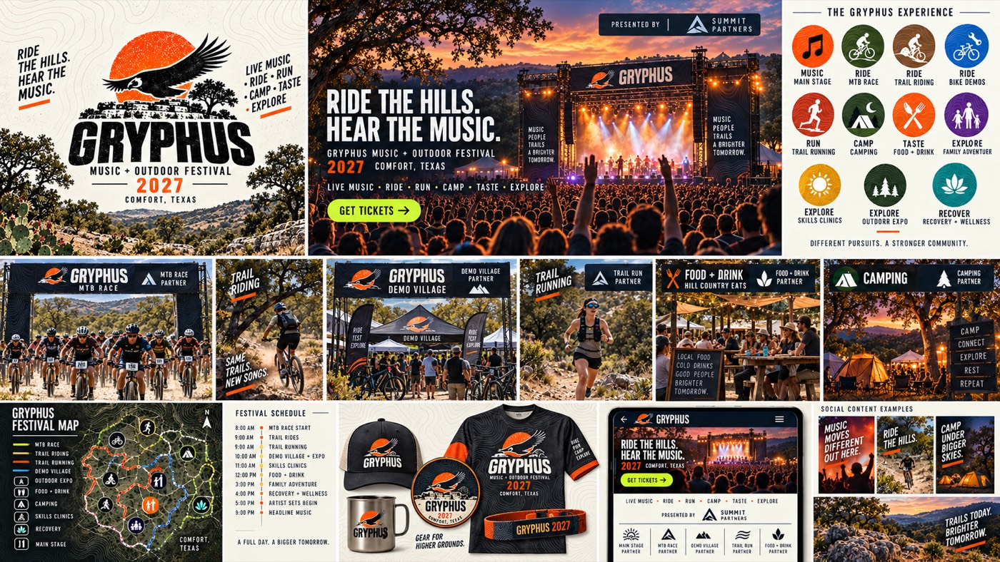

For a friend · October 2026
Cale,
come on in.
Two ideas for your world.
A little of Gordon’s, too.
New directions for Pizza Baby and your own site, brought together in one place. Take a look, try things, tell us what feels like you.
A gift concept from Gordon, made with Astra & Darby.

A whole lot
of opinion.
A home for the reviews, a desk to practice writing, and a shop full of possibilities. Pick a look to preview it here, then step inside.
OF 8
 Blush, olive & a little cowgirl mischief.
Blush, olive & a little cowgirl mischief.
One critic. Two looks.
Previewing Diaries. The site opens in this look.
Explore Pizza Baby DiariesThese are proposed designs. Merch is a preview, with no purchases or payments. The published reviews remain at Pizza Baby’s original site.
Try this when you get inside. Give something a slice score at the critic’s desk. Write the sentence that explains why. Watch it become a verdict.
Your taste.Your call.
The work.
The feeling.
Two ways into your story: the work that brings an idea to life, and what you want people to carry out of the room.

Stay a little
longer.

Take the
scenic route.
Fly a balloon. Choose an island. Find a story. Or choose “Just read it” and explore at your own pace.
Everything public,
in one place.
All of Gordon's public projects, gathered in one place.
Open the CabinetFour doors.
One good afternoon.
Shows with Friends · Island Hop
The media log · Vanderbilt’s reading edition
Made to start
a conversation.
Come back to this page whenever you want to try another direction.
Back to the beginning ↑